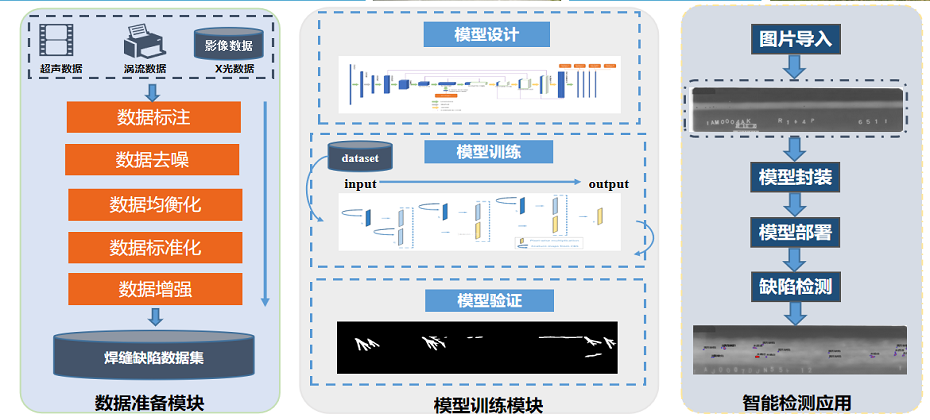
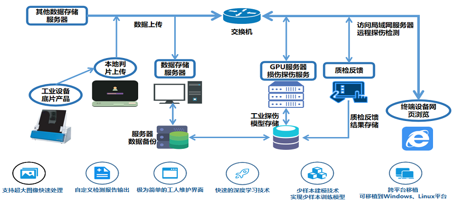
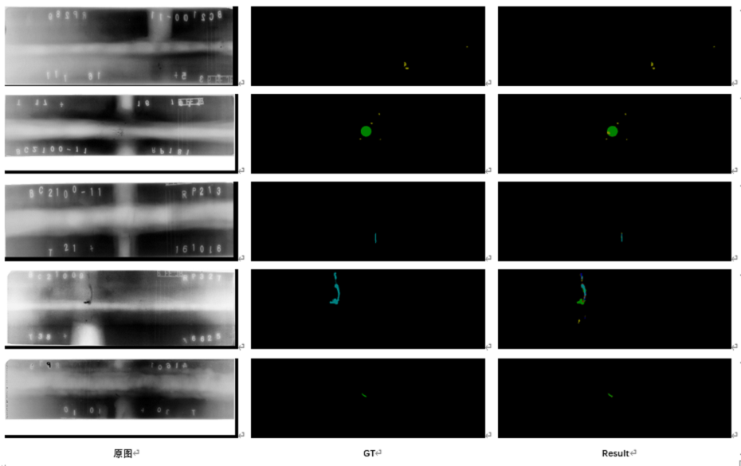
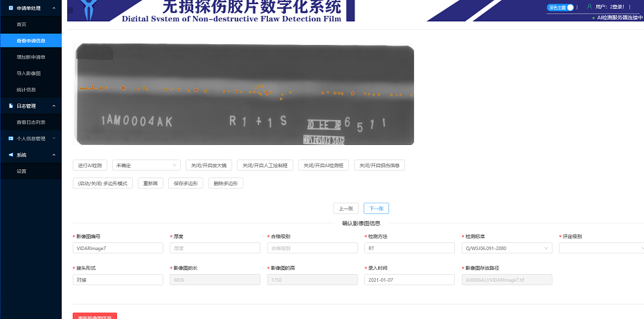

工业焊缝图像检测管理系统
项目介绍
问题：由于实际焊缝缺陷的种类多，比如气孔、夹渣、未焊透、未熔合、裂纹、凹坑、咬边、焊瘤等，传统图像分析方法很难做到让人满意的效果；数据质量差别很大，受到现场采集环境和人为操作的影响，数据的噪声很大，需要人力和时间成本进行分割、去噪和增强方法和高可靠性的模型研究；数据样本总数比较少，分散到每一类缺陷的样本数量就更少，这是一个非常困难的小样本问题。
方案：本项目通过前后端分离的方式搭建Web端，通过构建一种新型的多任务协同检测网络，来解决上述的三个问题，最终实现了全流程的打通与系统的完整交付实现缺陷检测全过程自动化、数字化、无纸化，减少环境风险、人员风险、以及中间环节的影响，提高缺陷检出率和检测效率。开展数字化成像检测信息平台构建，实现焊缝检测全过程的数字化管理。
项目架构


效果展示


项目视频